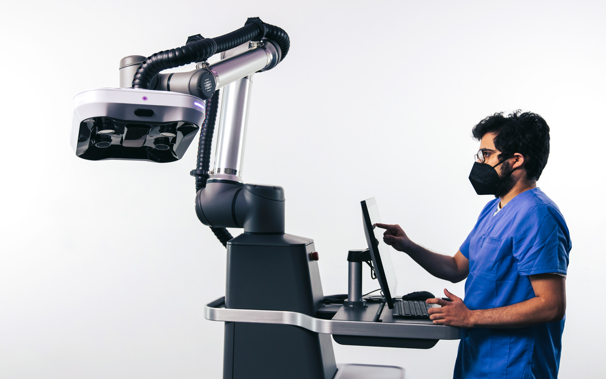
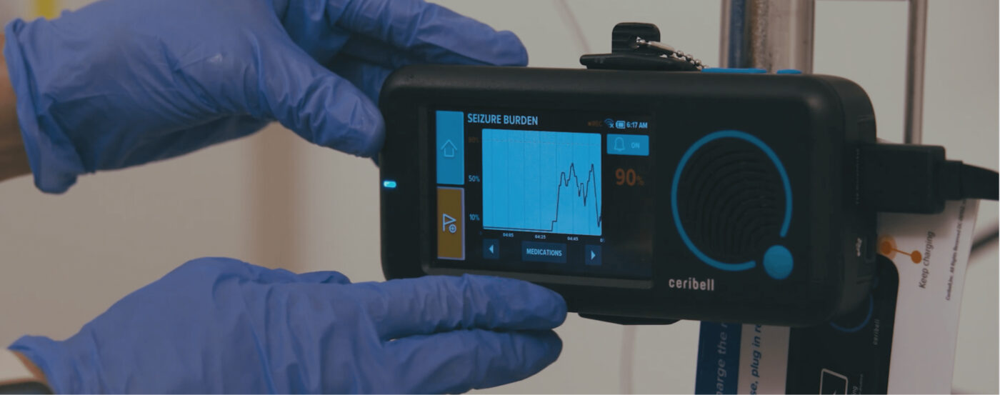

Les tendances Medtech
De O. Héniel · Publié le 17 Avril 2026

Le monde de la medtech évolue rapidement, avec des investissements en hausse ces dernières années pour pousser les innovations et proposer des technologies qui accompagneront les professionnels de santé dans leur diagnostic, traitement et accompagnement des patients.
Le développement est notamment propulsé par l’intégration de l’intelligence artificielle, de la robotique autonome et des technologies d’ultra-précision. Pour illustrer ces nouvelles tendances, nous avons sélectionné 4 innovations représentatives des tendances de l’industrie de la medtech en 2026.
Le système Paradigm de Proprio

Paradigm est une plateforme de chirurgie augmentée en temps réel. En combinant vision 3D, capteurs et intelligence artificielle, cette technologie permet aux chirurgiens de visualiser l’intérieur du corps avec une précision inédite pendant l’opération. Cette assistance en temps réel améliore considérablement la précision des gestes et réduit les risques d’erreurs, ouvrant la voie à une chirurgie plus sûre et plus performante.
Un « laboratoire sur la peau » conçu par Nutromics
Son concept de « laboratoire sur la peau » est en réalité un simple patch intelligent capable d’analyser certains biomarqueurs directement à travers la peau, sans nécessiter de prise de sang. Utilisant des capteurs avancés, il permet un suivi continu de l’état de santé et pourrait transformer la manière dont les traitements sont ajustés, notamment pour les maladies chroniques.
Ces quatre technologies sont une bonne illustration de la diversité des domaines de la medtech et des avancées qui peuvent en découler.
Ceribell met l’intelligence artificielle au service de la neurologie

Ceribell propose une solution innovante avec son système Clarity. Il s’agit d’un casque EEG portable capable de détecter les crises cérébrales grâce à l’intelligence artificielle. Là où les méthodes traditionnelles peuvent nécessiter plusieurs heures d’analyse, ce dispositif permet un diagnostic en quelques minutes seulement, ce qui est crucial dans les situations d’urgence. Cette rapidité d’intervention peut faire une différence déterminante pour les patients.
Les nanotechnologies de Positive Coating
Positive Coating exploite le potentiel des nanotechnologies avec une technique appelée Atomic Layer Deposition (ALD). Ce procédé permet de déposer des couches de matière à l’échelle atomique, avec une précision et une uniformité inégalées. Appliquée aux stents — ces petits implants utilisés pour maintenir les artères ouvertes — cette technologie permet d’améliorer considérablement leurs performances. Les revêtements obtenus renforcent la biocompatibilité, limitent les risques de corrosion et permettent même une libération contrôlée de médicaments. Comparée aux méthodes classiques, l’ALD représente une véritable rupture technologique, offrant un contrôle sans précédent sur les propriétés des implants. Les bénéfices pour les patients sont majeurs : réduction des complications, notamment des thromboses, et amélioration globale de l’efficacité des traitements cardiovasculaires.
Ces quatre technologies sont une bonne illustration des tendances actuelles de la MedTech. Les innovateurs cherchent notamment à répondre aux difficultés des hôpitaux et du personnel hospitalier en proposant des solutions qui permettent des diagnostics plus rapides et personnalisés, des solutions portables, en temps réel et monitorées à distance, qui permettent une prise en charge hors hôpital pour désengorger le personnel et permettre au patient une meilleure prise en charge même depuis son domicile. La MedTech a une visée claire : devenir invisible, autonome et intégrée au quotidien.